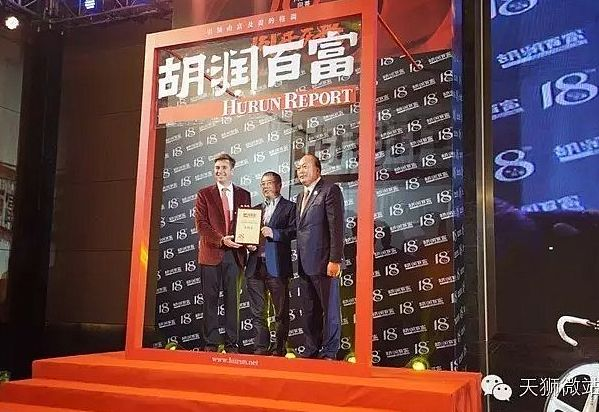
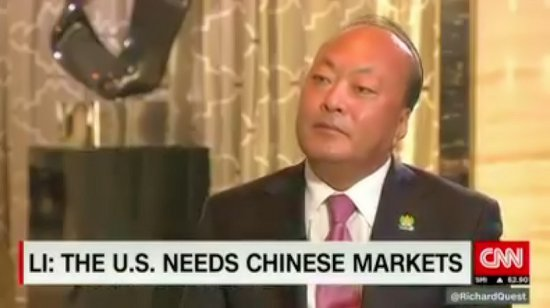
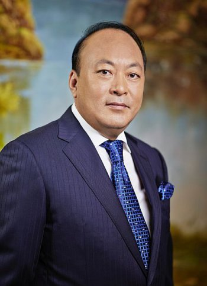
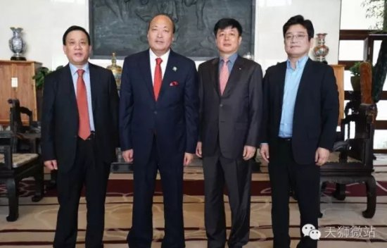
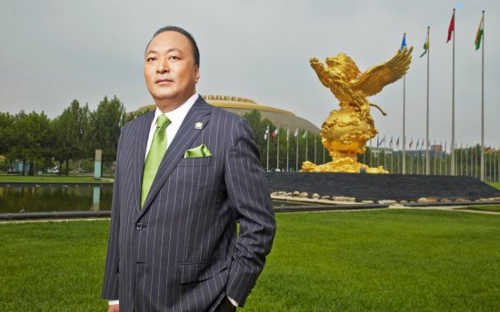
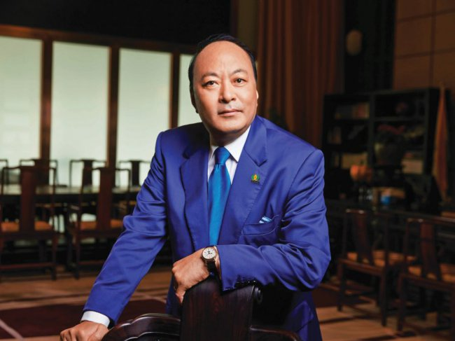
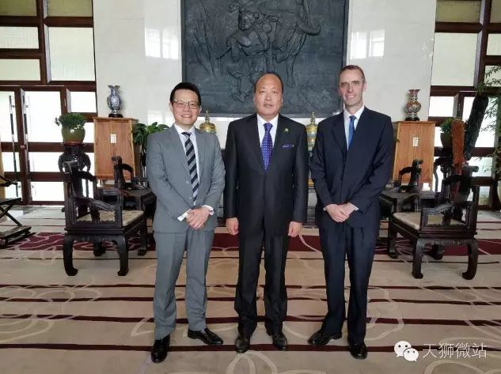
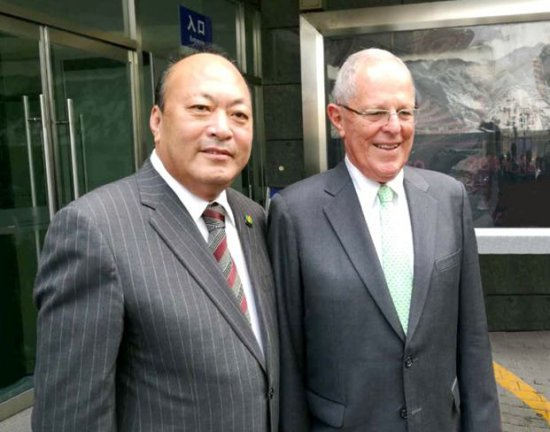

Председатель правления корпорации «Тяньши» г-н Ли Цзиньюань принял участие в вечернем банкете, устроенном компанией «Хужунь Байфу» для награждения самых уважаемых предпринимателей КитаяГлюкозамин относят к классу природных веществ, защищающих хрящи и суставы. Основная роль глюкозамина в организме человека – стимуляция выработки веществ, способствующих восстановлению хрящевой ткани. «Капсулы с глюкозамином «Тяньши» помогут вам чувствовать себя здоровым и активным и жить комфортной полноценной жизнью!  Дата: 18-11-2016 |
Интервью председателя правления корпорации «Тяньши» г-на Ли Цзиньюаня для канала CNN Журналист: Господин Ли Цзиньюань, обеспокоены ли вы вопросами американско-китайских торговых отношений? Ведь Дональд Трамп сказал, что все изменится. А вы известны на весь мир тем, что отправили тысячи сотрудников в путешествие. Ли Цзиньюань: Я не вижу повода для беспокойства. Неважно, кто будет президентом США, в любом случае это экономическая политика. У экономической политики большое будущее. Я не беспокоюсь, потому что Китай, как и Америка, обладает экономической силой, они тесно связаны между собой. Журналист: Президент Америки Дональд Трамп становится все более агрессивен в отношении торговли, повышения налогов. Как это скажется на экономической ситуации в целом? Ли Цзиньюань: Важность повышения налогов не принесет пользы экономике Америки. Вам следует еще раз об этом подумать. Я думаю, он (президент) не будет принимать решения без наличия причин для этого. Это не только экономический вопрос, но и также вопрос рабочих мест, развития предпринимательства. Как я уже сказал ранее, Китай и США – огромные экономические силы. Они полагаются друг на друга и должны внести вклад в экономику, экономическое развитие Китая внесло огромный мировой вклад, также как и США. Журналист: Верите ли вы, что торговые отношения между двумя странами, вернее, баланс между ними, справедлив? Ли Цзиньюань: Америка, может быть, и думает, что находится на вершине мира, но она нуждается в китайском рынке, в прямом стратегическом сотрудничестве. Китаю и США нужно понимать друг друга, и это важно признать. Журналист: Скажите, пожалуйста, сколько дистрибьюторов вы отправили на отдых? Ли Цзиньюань: 3000 хороших дистрибьюторов я отправил в Испанию в мае этого года. Позднее, в сентябре этого года 10 000 человек отправились в Индонезию, Бали. Всего было 20 000 человек, посетивших конференцию в Бали – там мы с размахом отпраздновали 21-ю годовщину нашей компании. Также мы придерживаемся государственной политики Китая «Один пояс, один путь», чтобы поддерживать мир во всем мире, осуществлять культурный обмен между странами. Журналист: Во сколько же вам обошлась поездка 3000 человек? Ли Цзиньюань: Примерно в 60 млн юаней, общий экономический вклад в Европу около 300 мл юаней. Это была отличная возможность повысить командный дух команды, это является частью корпоративной культуры, ведь наши партнеры вносят колоссальный вклад в нашу компанию. Дата: 11-11-2016 |
Встреча президента Гвинеи г-на Альфа Конде и председателя правления корпорации «Тяньши» г-на Ли Цзиньюаня30 октября 2016 года председатель корпорации «Тяньши» г-н Ли Цзиньюань прибыл в резиденцию для почетных гостей «Дяоюйтай» в Пекине с целью проведения дружеской встречи с президентом Гвинеи г-ном Альфа Конде, который в настоящий момент находится с официальным визитом в Китае. Дата: 2-11-2016 |
Послание г-на Ли Цзиньюаня в октябре 2016Дорогие тяньшисты всего мира, здравствуйте!  Дата: 28-10-2016 |
Представители Комитета национального собрания Республики Южная Корея посетили корпорацию «Тяньши»18 октября 2016 года представитель от Комитета национального собрания Республики Южная Корея г-н Цзян Дажунь, руководитель международного медицинского центра Южной Кореи ASAN г-н Че Тайси, член правления фонда TOBICO г-н Цзинь Сянсюнь и другие нанесли визит в корпорацию «Тяньши».  Дата: 21-10-2016 |
Рабочие указания председателя правления корпорации «Тяньши» г-на Ли ЦзиньюаняВо-первых, совместное использование ресурсов корпорации делится на два пункта: функции-обязанности и порядок действий. Дата: 12-10-2016 |
Интервью г-на Ли Цзиньюаня на Образовательно-промышленном форумеПредседатель правления корпорации «Тяньши» г-н Ли Цзиньюань принял участие в «Образовательно-промышленном форуме» и дал интервью на тему «Любовь и долг». Председатель правления подробно рассказал о 21-летней истории корпорации, о неисчерпаемом вдохновении и приободряющей силе духа, о том, что не боится потерпеть неудачу, о твердости и бесстрашии идти вперед.  Дата: 5-10-2016 |
Послание председателя правления г-на Ли Цзиньюаня в сентябреДорогие тяньшисты со всего мира, здравствуйте! Сентябрь – это золотая осень, сезон сбора урожая. Церемония празднования 21-й годовщины корпорации «Тяньши» прошла успешно, тяньшисты со всех уголков мира совместно приложили усилия, действуя сплоченно. Мы благополучно вступаем в эпоху большого развития – третьего взлета «Тяньши».  Дата: 29-09-2016 |
Торговый советник при посольстве Австралии посетил корпорацию «Тяньши»22 сентября 2016 года торговый советник австралийского
посольства в Китае г-н Иен Макинтош и старший инвестиционный директор комитета по торговле в Австралии, главный инспектор г-н Уильям Лин нанесли визит корпорации «Тяньши».  Дата: 28-09-2016 |
Председатель правления корпорации «Тяньши» г-н Ли Цзиньюань получил приглашение от президента Перу посетить фотовыставку «Память о Перу»На днях президент республики Перу г-н Кучински посетил Китай по случаю 45-й годовщины с момента установления дипломатических отношений. Председатель правления корпорации «Тяньши» г-н Ли Цзиньюань получил приглашения от г-на Кучински посетить фотовыставку «Память о Перу», символизирующую развитие и крепкую дружбу между Перу и Китаем. Президент Кучински очень заинтересован в развитии китайско-перуанских отношений, поэтому он прибыл в Китай. Он считает Китай важным партнером, необходимым для восстановления экономики Перу.  Дата: 22-09-2016 |
Страницы: